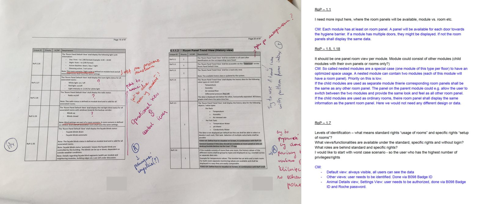
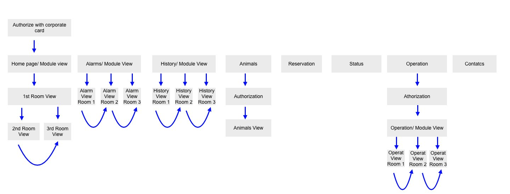
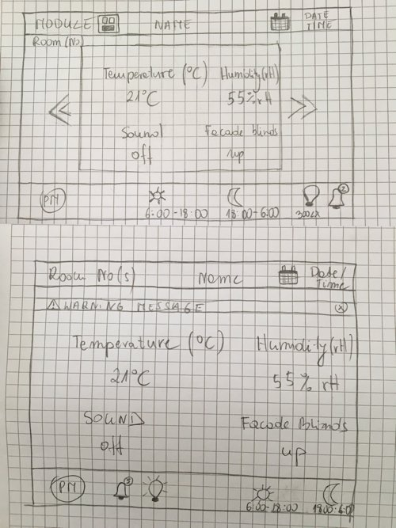
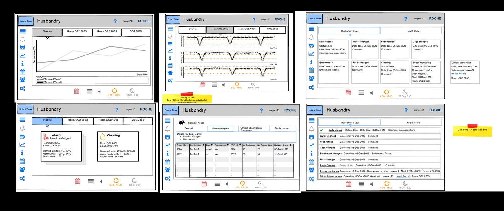
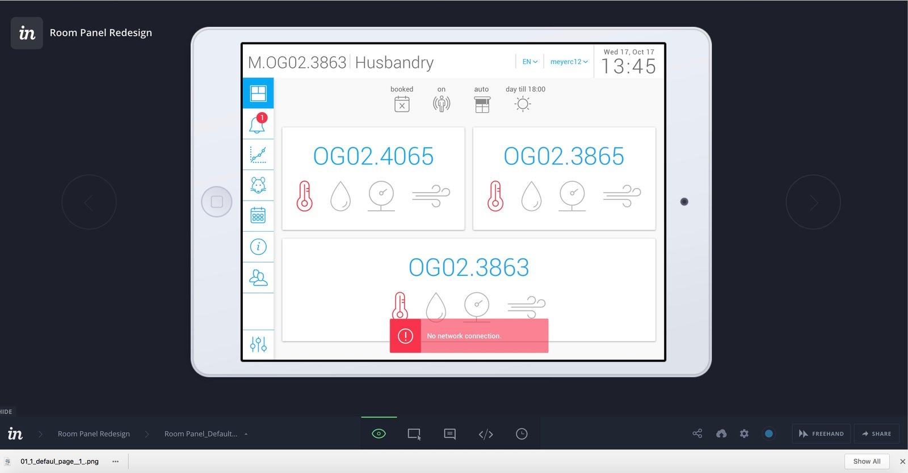
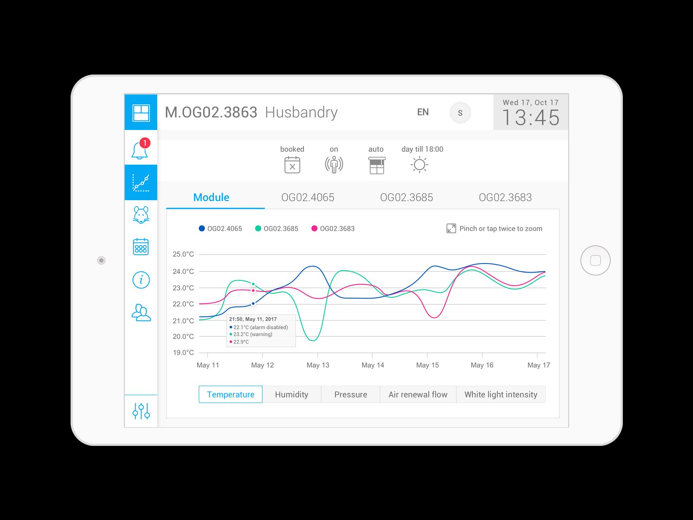
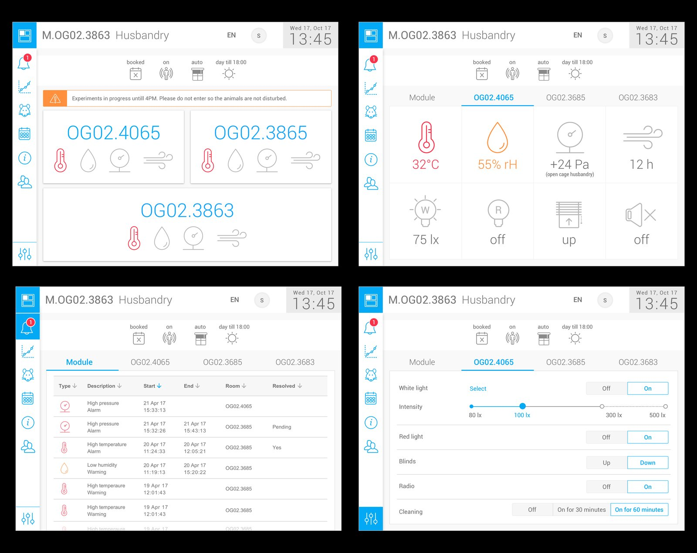
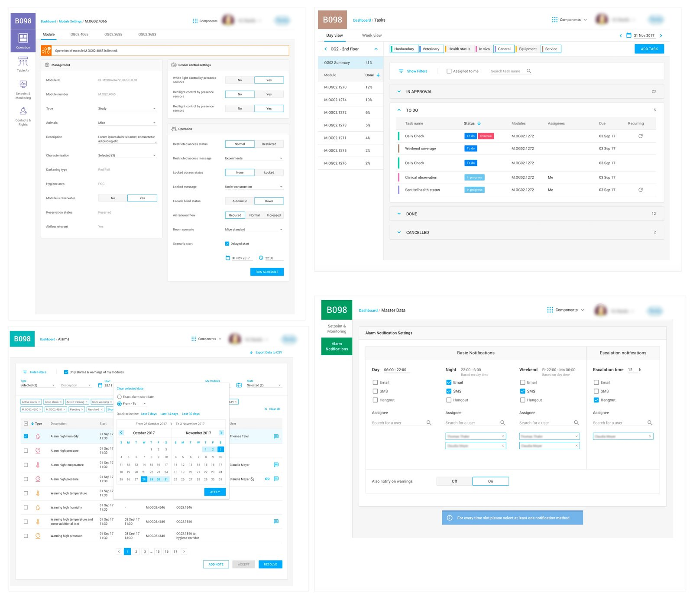

Designing a touchscreen system that brought a fully paper-based research facility onto one automated, intuitive interface.
Create a fully integrated and automated intelligent building system that allows users to manage the building, modules and rooms. The previous building had no automated solution and didn't use any other systems — all activities related to research were performed on paper, tracked manually.
People not related to IT — scientists, animal care takers, building managers, husbandry supervisors — who are familiar only with regular IT software like Word, Excel, Google Drive and email. Often people in older age.

I started the project as the main contact to the business, in a hybrid role of Business Analyst, UX Designer / UI Designer. As the project entered a more advanced phase, I was supported by an additional Business Analyst, Interaction Designer and UX Researcher.
The design team worked in Kanban, while the developer team worked in Scrum. One design representative was always part of the Scrum meetings, participating in daily standups, planning, demos and retrospectives.
We started working closely with Business Analysts on the business side. At the very beginning they provided very detailed documentation with requirements. Our main goal was to understand the current solution, its constraints and issues — so we conducted many interviews with business BAs and regular users, and did some shadowing on site: observing scientists' daily work, the tools they used, and the issues they ran into. We needed to match the business needs with these findings.

Next, we created the initial application map, user flow and sketches. The goal was an MVP that met core user needs: quick, efficient, intuitive and easy to follow. Due to technical constraints we chose a web-based solution over a native app, inspired by Material Design. The touchscreen app needed to follow the brand style guide and stay minimalistic and elegant.

User interface design was based on Material Design, with some exceptions. Initial interaction design was created in InVision as a fully clickable mockup. When developers decided to go with the Vuetify.js framework, the UX/UI and interaction designers made the most of the components and patterns it already defined.


We collaborated closely with developers throughout, making sure high usability of the final solution remained a goal shared by every stakeholder. A design representative participated in every Scrum meeting.
Here is the final product design. The mockup was improved with feedback from usability tests applied, along with some minor changes to the user interface.


Our next step was to create a dashboard (web app) that allows you to control, manage and administrate the building settings — a separate, longer story.
